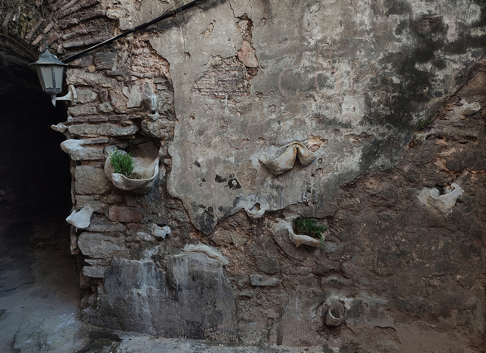
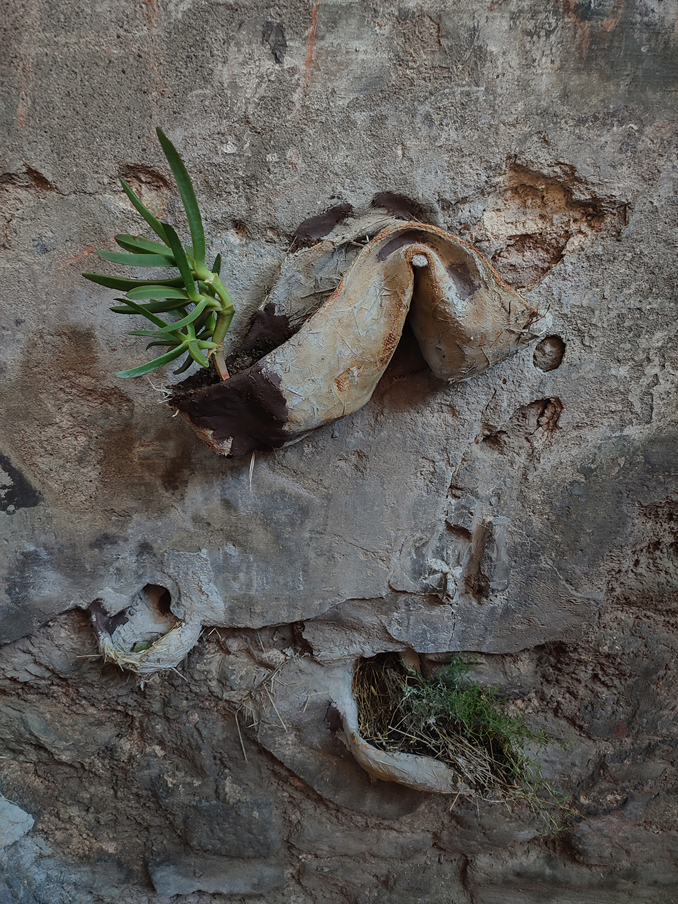
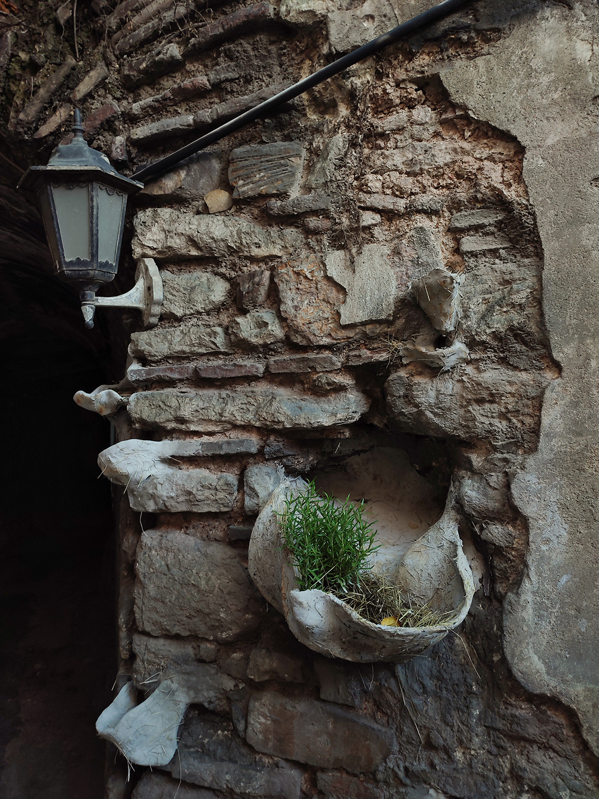
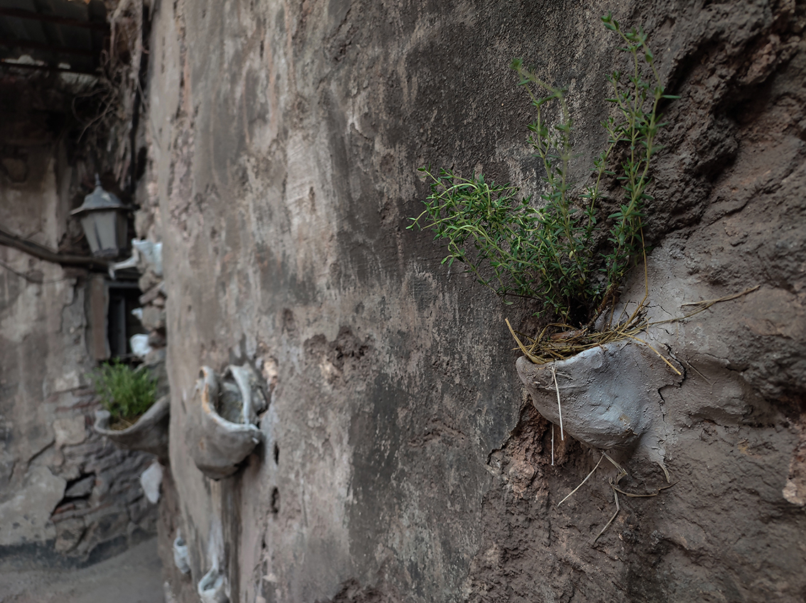
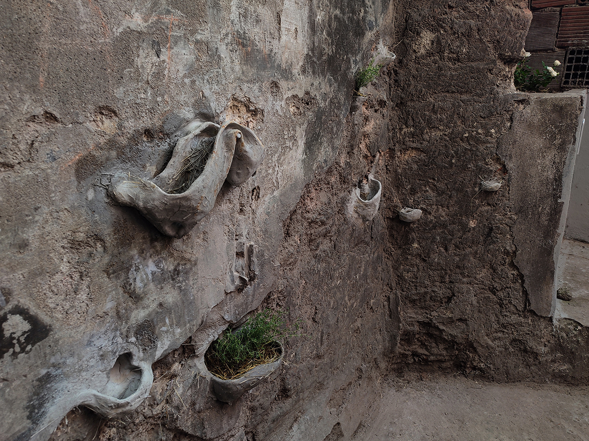
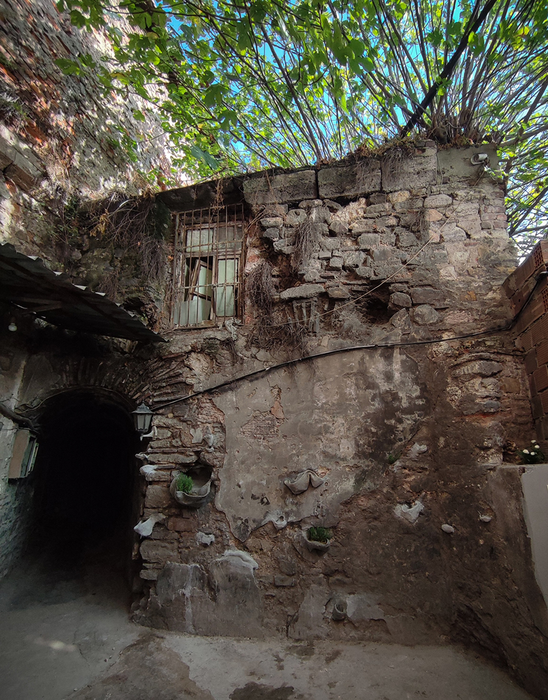
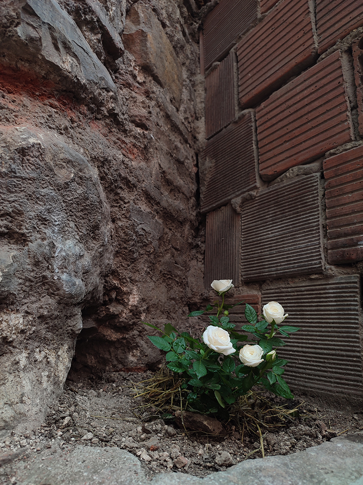

NESTS FOR THE NOMADIC
2026 · Site-specific installation commissioned by Mahalla KĪMIYĀ for the Creative Europe platform Magic Carpets · The Alchemist's Assembly Festival · Büyük Valide Han, Istanbul, Turkey

Concept
The work grew from a memory of a swallow that built its nest above the door of my childhood home in the Ukrainian countryside. The house was made of clay in the traditional way, a craft I grew up around and sometimes practised myself, on our shed. Swallows, like many other birds, fly from Ukraine and stop in Turkey on their way, so the memory felt close to where I was working.
For this piece, I returned to that material and worked the clay directly into an old wall of Büyük Valide Han. Following the existing cracks, stones, cavities and traces of time, I shaped small nests within them: shelters for nomadic birds, plants and thoughts.
I planted rosemary, thyme and a rose nearby, in homage to the han’s history with spices, and invited the plants already growing on the walls to find their own place in the nests. When a neighbour from the han saw the work, he brought another plant, Carpobrotus edulis, a hardy succulent that stands for eternal life because of its endurance. The han has its own community of people who work and spend their days there, and the installation gives them a small garden corner, a living place that can change and grow over time.
The work is part of the wider project Nomadic Garden, which asks how gardens can exist in times of crisis and displacement.





